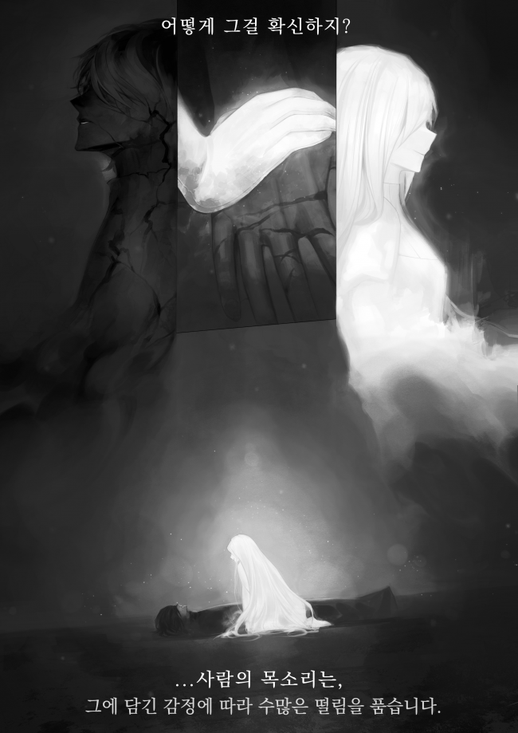

回归者与盲圣女
3.贫民窟(3)
五天，或者可能更久。
维拉看到自己还活着，露出了冷笑。
他不愿承认，但蕾妮的治疗和照顾起了作用。
她甚至减少了自己的食物份量，用一部分自己的食物喂他来防止他挨饿，通过收集失去的力量的残余神性来缓解他伤口的恶化。
然而，就只是这样。
“情况正在好转。我们再努力一点吧。”
蕾妮说。这时，维拉把头转向蕾妮并回答道。
“胡说。只是我的寿命长了一点而已。”
是的，他的寿命只是延长了一点。就只是这样。
伤口仍然没有愈合。疼痛一天比一天严重。
在过去一周里逐渐恶化的伤势，现在已经夺走了他移动手指尖所需的所有力量。
维拉痛苦地喘着粗气，对蕾妮说道。
“现在承认怎么样？”
“什么意思？”
“你白费力气了。我很快就会死。”
维拉用尽全力说出这句话时，蕾妮微笑着摇了摇头。
“你永远不会知道。”
维拉的眉头皱了起来。
“即使你说那样的话，什么也不会改变。”
“除非你尽力尝试，否则你永远不会知道。”
只是重复同样的回答。
维拉再次感到自己的胃紧绷起来。
她的坚持让他感到如此可怜。
“你是愚蠢的人。”
“这叫做有爱。”
“你是鹦鹉吗？”
“不可能。正如你所看到的，我是人类。”
“你连一个字都不肯让步。”
“求胜心是进步的良好动力。”
维拉皱起了眉头。
他想叹口气，但全身的疼痛让他几乎做不到。
“如果我没事，我就扇你一巴掌。”
“这是个好心态，我会等你，所以赶紧好起来。”
蕾妮说着，靠在躺着的维拉旁边的墙上，拿出罗萨里奥。
一串一眼就能看出是贵重品的铂金色的念珠。
那是圣国的大祭司的标志。
她总是拿着念珠，只要有时间就一直祈祷。
有天我忍不住问她，她一直祈祷着什么，难道不觉得累吗。
当时的回答是她正在为他康复祈祷。这是非常可笑的愿望，除非他是个白痴，否则不会有这样的愿望。
维拉回忆起他的过去，看到蕾妮手持念珠祈祷，不由自主地说出了话。
“……那串念珠，如果你不打算扔掉，最好把它留在这里。”
“我怎么可能这样做？”
“你会因为那串念珠而死。”
维拉看着蕾妮，她仍然闭着眼睛，肯定地说。
这不是胡说八道。
贫民窟是它将被遗弃的地方。
贫民窟的拾荒者。
他们之所以被称为拾荒者，是因为如果他们发现任何有价值的东西，他们就会抢走并卖掉，即使是尸体的器官。
如果他们发现罗萨里奥，蕾妮会立刻成为他们的目标。
那些无赖会用刀刺穿蕾妮的脖子杀死她，然后夺走罗萨里奥，剖开她的肚子取出所有器官并卖掉，只有这样他们才会满意。
“拾荒者是一群只为今天而活的疯子。如果他们能赚到今天的钱，他们甚至会冒着被圣国追捕的风险去夺取罗萨里奥。”
谈了很久之后，他的胸口又开始疼了。
维拉剧烈地呼吸着，疼痛在他的身体里回荡，然后立刻皱起了眉头。
他自己也搞不懂提起这件事的原因，为什么他这么爱管闲事？
难道因为我离死亡只有一步之遥，所以现在终于疯了吗？他这么想。
“真不幸。”
她回答。
说罢，蕾妮睁开眼睛，带着一丝微笑继续说道。
“如果他们不得不这样做，他们一定过着非常艰苦的生活。”
“哈，如果卡里亚克听到这句话，他会哈哈大笑，然后向后倒去。”
“他是谁？”
“第一个拾荒者。”
“哦，原来是个名人。”
“嗯，你可以这么说。”
他是贫民窟最黑暗角落的创造者，所以这么说也不算错。
“他们不值得同情。”
“世界上有这样的人吗？”
“你生活在花丛中。”
“我用眼睛看不到，所以我必须在脑海中现象。”
“… 别说了。”
维拉闭上了眼睛。
他一生中从未在口才上输过，但每当和她说话时，总是有种无力感。
说真的，她是一个看起来更像怪人而不是圣人的女人，无论他怎么想。
自从她把他带到这里以来，她从未问过他。
甚至连名字这样最基本的东西都没有问，更不用说他的身份或他的过去。
如果是因为她对我没兴趣，那也没有道理。
她几乎把所有的时间都花在了照顾他身上，并且从未表现出任何疲劳或烦恼的迹象。
每当感觉快要因为痛苦而失去理智时，她都会握着他的手，和他说话，虽然她自己一天连一顿饭都吃不饱，但她仍然照顾他的饮食。
的确，可以说那是圣人的高尚，但对维拉来说，那不是高尚，而是怪异。
‘……不，不是。’
维拉感到一阵泄气的笑声从口中发出。
说实话，他不想把它当作高尚，所以他那样判断。
虽然两人都过着悲惨的生活，但她不褪色的光芒是如此耀眼，以至于让他意识到自己身上沾满了各种污秽，所以他那样评判她。
维拉谦卑地承认了她。
他为自己的过去生活感到羞耻，他作为恶棍中的恶棍生活，在她面前暴露无遗，所以他轻视她。
她如此耀眼，她能够轻而易举地做到过去他做不到的事情。
在我生命的尽头，我以为身边不会有人。
他过着丑陋不堪的生活，以至于不值得任何人在他临终时陪伴他，所以他甚至不敢奢望。
于是他发誓，他将谦卑地接受独自死去，但她的光亮甚至能削弱他的誓言。
她给了我像我这样丑陋的人类不应有的善意。
‘……真可笑。’
维拉嘲笑自己依靠她的温暖。
*
他的眼睛追随着她。
……他看着她闭着眼睛毫无表情的脸。
因烧伤而留下疤痕，无法辨认其原本模样的诡异的脸。
维拉试图想象出她本来的样子，但由于损坏得太严重，这并不容易。
“你对你的脸做了什么？”
“你在说什么？”
“……我说的是烧伤。”
“是的，是我自己弄的。”
“你有什么理由这样做吗？”
这是维拉无法理解的事情。如果只是想隐藏身份，可以使用伪装道具，如果不行的话，还可以使用面具。
维拉一脸疑问地等待着答案，蕾妮则轻笑着回答。
那是一种带着几分戏谑的语气。
“你知道吗？在我把脸弄成这样之前，我可是让所有人都惊叹的美人呢。”
这是突如其来的话，但维拉只凭这些话就明白了她的意图。
在贫民窟里，维拉比任何人都清楚，美丽的外表会成为致命的弱点。
她一定是想说这是为了保护自己。
“……一个盲人怎么就能这么肯定呢？你就不觉得那些看到你的人只是没有勇气叫你丑八怪吗？”
维拉对他自己的恶劣回答嗤之以鼻，因为他厌恶她的言辞。
接下来也是一个可笑至极的回答。
“我说的都是实话。”
“你怎么就能这么肯定呢？”
“你知道失明意味着什么吗？”
蕾妮说着，身体向维拉倾斜。蕾妮的手搭在了维拉的手上。

“意味着其他感官会变得更加敏锐。一个人说的话是真是假，我比别人更能体会。”
蕾妮的手拂过维拉的手背。
“人的声音根据所包含的情绪有很多种振动。当你撒谎时，会有断断续续的颤动，当你讲述一个感人的故事时，有一种湿润的颤抖。”
一直抚摸着维拉手背的蕾妮的手，开始轻轻按压维拉手腕上的脉搏。
“有时会有脉动。情绪越强烈，它就越明显。”
“…你现在为什么要说这个？”
“那是因为几乎所有看到我的人，在看着我的时候，都有一种充满激动的嗓音。”
“难道你不觉得你只是过于自恋了吗？”
“不可能。我敢肯定。那些告诉我我美丽的人的声音中的颤抖，是一种热切，一种朦胧的色彩。据我所知，只有爱，才有如此的色调。”
“所有看到你的人都爱上了你？你这么说不害臊吗？”
“我说的是事实。”
维拉感觉到蕾妮脸上露出一种自鸣得意的笑容。
“够了。我问了愚蠢的问题。”
“可惜没有办法证明。”
蕾妮握着脉搏的手松开了，在维拉手腕上的温暖也消失了。
维拉感到莫名失落，短暂地叹了一口气，然后紧紧闭上了嘴。
随着身体的虚弱，精神也会变得脆弱吗？
维拉觉得自己的自尊心因刚刚涌上来的情绪而受损。
那一定是我从未向任何人求助，也从未对离去的温暖感到遗憾的生活。不知何故，当我与她打交道时，这种弱点就显现出来了。
他不断在他的脑海中提出毫无意义的肤浅假设。
如果我在不同的时间、不同的地点、不同的情况遇到你，我会和现在不同吗？如果在我变得邪恶之前遇到你呢。我会过着与现在不同的生活吗？如果在你毁容之前，我会像你所说的那样坠入爱河吗？
一连串永无止境的假设。结果，维拉再次感到胃部翻腾，咬着嘴唇甩开这些念头。
那是因为在那些不断增长的假设之后，痛苦在不断增长。
沉默持续了一段时间，才摆脱了那些想法。
“……我出去一会儿。”
蕾妮张开了嘴。
维拉犹豫了一下，坐了起来，看着蕾妮踉跄着靠在墙上，又说了一遍那些话。
“你最好把罗萨里奥留下。”
“我怎么可能那样做？”
那是拒绝的回应。
维拉看着蕾妮背对着他慢慢走着，感到窒息和不情愿。
于是，不必要的话语从他口中说出来了。
“……我猜你一直祈祷的祷告，一定是在祈祷有人杀了你。”
“怎么可能，在你恢复之前，我不会死的。”
蕾妮这样说着，打开了棚屋的门，“吱呀”一声，她走了出去。
“我马上回来。”
一如既往，她用那一贯的平静语气说着。
那是维拉听到的蕾妮的最后一句话。